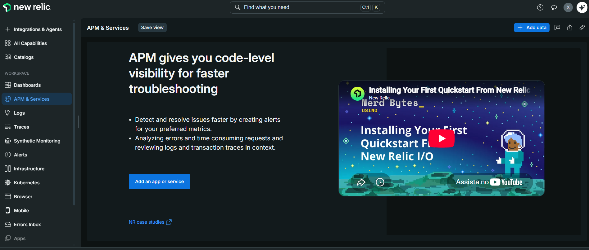
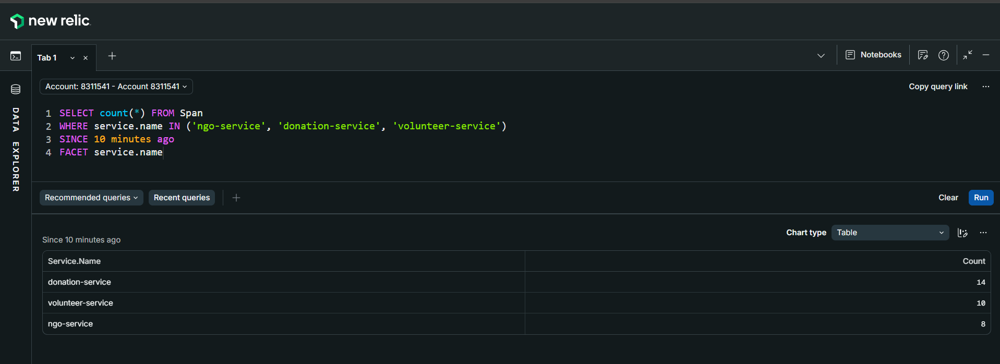
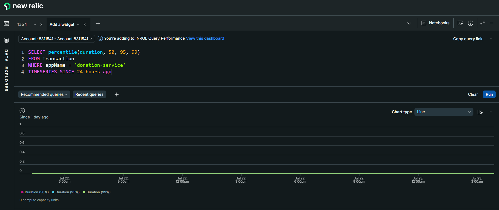
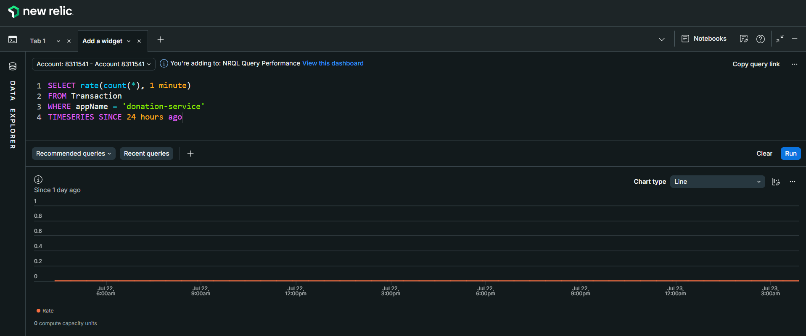
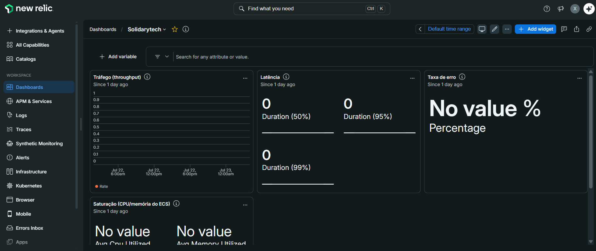

1. SRE — Confiabilidade e Golden Metrics¶
Documentação de Site Reliability Engineering da plataforma SolidaryTech, cobrindo definição de SLIs, SLOs, SLA, dashboard de observabilidade e estratégia de redução de MTTR.
Arquitetura de Observabilidade¶
A stack de observabilidade é 100% baseada em OpenTelemetry (padrão vendor-neutral), com o New Relic como backend de APM via ingestão OTLP nativa. Nenhum código proprietário de vendor foi adicionado às aplicações — se for necessário trocar de plataforma, é só apontar o endpoint OTLP para outro destino.

┌────────────────────────────────────────────────────────────┐
│ ECS Fargate │
│ ┌───────────────┐ ┌───────────────────┐ ┌─────────────┐ │
│ │ ngo-service │ │ donation-service │ │ volunteer │ │
│ │ Python/Flask │ │ Go (SDK OTel) │ │ Python/Flask│ │
│ │ OTel auto │ │ otelhttp + spans │ │ OTel auto │ │
│ └───────┬───────┘ └─────────┬─────────┘ └──────┬──────┘ │
└──────────┼────────────────────┼───────────────────┼────────┘
│ │ │
└────────────────────┼───────────────────┘
│ OTLP/gRPC :4317
▼
┌───────────────────────┐
│ New Relic APM (US) │
│ otlp.nr-data.net │
│ Traces + Metrics │
└───────────────────────┘
Instrumentação por serviço¶
| Serviço | Linguagem | Tipo de instrumentação | Bibliotecas |
|---|---|---|---|
ngo-service |
Python 3.11 | Auto (agente) | opentelemetry-distro, opentelemetry-instrumentation-flask, opentelemetry-instrumentation-psycopg2 |
donation-service |
Go 1.21 | Manual + SDK | otel/sdk, otelhttp, spans customizados (db.insert_donation) |
volunteer-service |
Python 3.11 | Auto (agente) | opentelemetry-distro, opentelemetry-instrumentation-flask |
Toda a configuração OTel é injetada via variáveis de ambiente na task definition do ECS (
OTEL_EXPORTER_OTLP_ENDPOINT,OTEL_EXPORTER_OTLP_HEADERS,OTEL_RESOURCE_ATTRIBUTES,OTEL_SERVICE_NAME).
SLIs e SLOs do donation-service¶
O donation-service foi escolhido como componente-alvo dos SLOs por ser o Hot Path da plataforma — falhas nele impactam diretamente o recebimento de recursos financeiros por parte das ONGs.
Definição formal¶
| SLI | Descrição | Fonte de dados | SLO | Janela |
|---|---|---|---|---|
| Latência | Percentual de requisições HTTP com duração menor que 300ms | Atributo duration na tabela Transaction do New Relic |
≥ 95% | 28 dias |
| Taxa de Sucesso | Percentual de requisições HTTP com status code < 500 (exclui erros do servidor) | Atributo httpResponseCode na tabela Transaction |
≥ 99,9% | 28 dias |
Justificativa dos limiares¶
-
Latência (< 300ms): o
donation-serviceexecuta apenas 1 INSERT em PostgreSQL + 1 envio assíncrono para SQS. Requisições que ultrapassam 300ms indicam degradação em algum desses componentes ou saturação de recursos do container. O SLO de 95% aceita variabilidade natural sem tolerar degradação sistêmica. -
Taxa de Sucesso (99,9%): o operador SLO conta apenas erros atribuíveis ao serviço (5xx), tratando 4xx como problemas de cliente (dados inválidos), coerente com a filosofia do Google SRE Book.
Queries NRQL de referência¶
SLI Latência:
SELECT percentage(count(*), WHERE duration < 0.3) AS 'SLI Latência (%)'
FROM Transaction
WHERE appName = 'donation-service' AND name LIKE '%donations%'
SINCE 28 days ago



SLI Taxa de Sucesso:
SELECT percentage(count(*), WHERE httpResponseCode < 500) AS 'SLI Sucesso (%)'
FROM Transaction
WHERE appName = 'donation-service' AND name LIKE '%donations%'
SINCE 28 days ago
SLA e Error Budget¶
SLA declarado¶
A partir dos SLOs acima, a plataforma SolidaryTech declara aos seus stakeholders (ONGs, doadores e comitê gestor) o seguinte SLA de disponibilidade do fluxo de doações:
99,9% de disponibilidade mensal, medida como o percentual de requisições ao endpoint
POST /donationsque retornam status HTTP < 500 e concluem em menos de 300ms, apurada em janela móvel de 28 dias.
Error Budget¶
O Error Budget corresponde ao complemento matemático do SLO — ou seja, à parcela de falhas que a plataforma pode absorver sem violar o compromisso com os usuários. Para SLO de 99,9%:
| Métrica | Valor |
|---|---|
| Error Budget total (mensal) | 0,1% das requisições |
| Equivalente em tempo (base 30 dias) | ~43,2 minutos de indisponibilidade total |
| Consumo aceitável por semana | ~10 minutos |
| Consumo aceitável por dia | ~1,4 minutos |
Política de uso do Error Budget¶
- Budget > 50% restante: operação normal, deploys sem restrições.
- Budget entre 20% e 50%: deploys só com aprovação; foco em correção de bugs conhecidos.
- Budget < 20%: freeze de features — apenas correções de bugs relacionados a estabilidade.
- Budget esgotado: toda a capacidade de engenharia migra para investigação da causa raiz até o SLI voltar ao objetivo.
Dashboard SRE¶
- Dashboard criado no New Relic com título
SolidaryTech

-
Link do dashboard: Abrir Dashboard SRE no New Relic
-
Golden Metrics visíveis (latência, tráfego, erros, saturação)
-
Consumo do Error Budget visível em widget dedicado
Widgets do dashboard (10 painéis)¶
Organizados em 3 seções conforme a hierarquia de visualização executiva → operacional → forense:
| # | Seção | Widget | Tipo | Métrica |
|---|---|---|---|---|
| 1 | SLO Status | SLO Latência (28d) | Billboard | % de requisições < 300ms |
| 2 | SLO Status | SLO Taxa de Sucesso (28d) | Billboard | % de requisições sem 5xx |
| 3 | SLO Status | Error Budget Restante | Billboard | % do budget mensal disponível |
| 4 | Golden Metrics | Latência p50/p95/p99 | Line | Percentis por serviço |
| 5 | Golden Metrics | Tráfego | Area | Requisições/min por serviço |
| 6 | Golden Metrics | Taxa de Erro 5xx | Line | % de erros por serviço |
| 7 | Golden Metrics | Saturação CPU | Line | aws.ecs.CPUUtilization |
| 8 | Forense | Erros recentes | Table | Últimos 20 TransactionError |
| 9 | Forense | Top endpoints por latência | Bar | Endpoints mais lentos |
| 10 | Forense | Apdex | Gauge | Índice de satisfação do usuário |
Evidência visual¶
Print do Dashboard SRE:
Print do SLO Status (topo):

Print das Golden Metrics em tempo real:

Rastreabilidade Distribuída (Distributed Tracing)¶
Cada requisição HTTP gera um trace distribuído com múltiplos spans que atravessam o serviço. No donation-service, a instrumentação manual em Go produz uma hierarquia clara:
POST /donations (span raiz — otelhttp)
└── db.insert_donation (span filho — tracer manual)
├── attribute: donation.ngo_id = 1
└── attribute: donation.amount = 250.00
Essa granularidade permite responder rapidamente perguntas como: - "O tempo total foi 800ms — quanto foi banco e quanto foi HTTP overhead?" - "Quais valores de doação demoraram mais que 500ms nas últimas 24h?"
Query de validação:
SELECT count(*), average(duration.ms) AS 'Latência média DB (ms)'
FROM Span
WHERE service.name = 'donation-service' AND name = 'db.insert_donation'
SINCE 1 hour ago
Print da árvore de spans:

MTTR — Mean Time To Recovery¶
A instrumentação OTel dos 3 serviços permite que qualquer erro apareça no APM em segundos (via trace), em vez de depender de logs manuais — isso reduz o tempo de detecção de incidentes de minutos/horas (checagem manual) para near real-time, o que impacta diretamente o MTTR ao eliminar a etapa de "descobrir que algo está errado" do ciclo de resposta.
A meta é reduzir o MTTR estimado da plataforma para < 20 minutos através da automação em três frentes:
Fórmula do MTTR¶
MTTR = Tempo de Detecção + Tempo de Diagnóstico + Tempo de Recuperação
Redução por etapa¶
| Etapa | Sem observabilidade | Com stack atual | Ganho |
|---|---|---|---|
| Detecção | Reclamação do usuário / verificação manual (30 min – 4h) | Alerta NRQL disparado em ≤ 5 min | ~90% |
| Diagnóstico | Ler logs no CloudWatch, correlacionar manualmente (30 min – 2h) | Trace distribuído no APM aponta o span com falha em ≤ 10 min | ~85% |
| Recuperação | Rebuild + redeploy manual (10 – 20 min) | Rollback automático via deployment_circuit_breaker do ECS em ≤ 3 min |
~80% |
| MTTR total estimado | 1h10min – 6h20min | < 20 min | ~90% |
Detecção automática — alertas configurados¶
- [x] New Relic Alerts Policy:
SolidaryTech — SRE Alerts - [x] 3 condições NRQL configuradas com notificação por e-mail:
| # | Alerta | Condição | Severidade |
|---|---|---|---|
| 1 | SLO de latência violado | % req < 300ms cair abaixo de 95 por 5 min |
Crítica |
| 2 | Burn rate do Error Budget alto | % req com 5xx acima de 0,1 por 5 min |
Crítica |
| 3 | Ausência de sinal | Sem dados de qualquer serviço por 5 min | Warning |
Print da policy de alertas:

Runbook de resposta a incidentes¶
Em caso de disparo de alerta, o fluxo é:
Alerta disparado → Notificação por e-mail
│
▼
Abrir Dashboard SRE → confirmar SLO violado
│
▼
Abrir trace do span com falha no APM → identificar componente
│
▼
Decisão:
├── Bug de código → rollback via ArgoCD/ECS force-new-deployment
├── Recurso saturado → scale up temporário via HPA/desired_count
└── Dependência externa (RDS/SQS) → escalar time responsável
│
▼
Post-mortem obrigatório se Error Budget consumido > 5% em 24h
Circuit Breaker do ECS¶
Configuração aplicada em infra/terraform/modules/ecs/main.tf:
resource "aws_ecs_service" "services" {
# ...
deployment_circuit_breaker {
enable = true
rollback = true
}
}
Efeito: se um novo deploy falhar em subir tasks saudáveis dentro do período de estabilização, o ECS automaticamente reverte para a task definition anterior, sem intervenção humana. Isso limita o impacto de um deploy ruim ao intervalo entre o push e a detecção da falha — tipicamente menos de 5 minutos.
Evidências de Operação¶
- [x] 3 serviços instrumentados e enviando telemetria
- [x] Traces com spans customizados no
donation-service(evidência de instrumentação manual em Go) - [x] Dashboard SRE publicado
- [x] Error Budget calculado em tempo real via query NRQL
- [x] Circuit Breaker do ECS ativo em produção (
lab) - [x] Alertas configurados e testados
Documentação detalhada, disponível em aqui: New Relic - Passo a passo.